团队知识库使用手册
👥 团队知识库 (Team Knowledge Base)
在保留「个人沙箱」原则的前提下，让小团队在同一个 workspace 内共享一份带角色管控、邀请码与向量检索的知识集合。
适用版本：Prism / Memosima feature/team-knowledge-base 分支及之后。
本手册覆盖：开团 → 邀请 → 加入 → 写词条 → 检索 → 生成 RAG Prompt 的全流程，以及治理、错误码与运维提示。
🌐 从 v0.7 起，下列流程全部可以纯 Web 完成：
管理员到 /admin/ui → 团队 TEAMS tab 组里
开团 / 管成员 / 发邀请 / 写词条；普通成员到 /teams/ui
用邀请码加入，多团队 token 由浏览器 localStorage 自动切换，
词条 CRUD、向量检索、QA Prompt、owner 专属的成员/邀请管理一站完成。
本手册保留 curl 流程作为脚本化与 CI 场景的参考。
0a. 纯 Web 工作流（推荐）
0a.1 管理员入口 /admin/ui
用 SIDECAR_ADMIN_TOKEN 登入 Admin UI，顶栏 nav 末尾的
「团队 TEAMS」 tab 组提供 4 个 panel：
- 团队：列出全部团队 / 新建团队（保存后用对话框一次性显示
owner_token，提供「一键复制」） / 一键删除团队（含级联确认）。 - 成员：选择团队后列出成员，内联调整角色（owner/editor/viewer 下拉）， 移除成员（带确认对话框）；触发最后 owner 保护时会显示 409 提示。
- 邀请：列出邀请记录（含已撤销/已耗尽，便于审计），新建邀请保存后用对话框 一次性显示邀请码并提供「一键复制」；点「撤销」立即作废。
- 词条：标签 / 关键字 / 分页过滤；新建 / 编辑 / 删除。管理员通过 「合成 owner」可改任意词条。
因为后端把 SIDECAR_ADMIN_TOKEN 视作所有团队的「合成 owner」，所以管理端
只需要这一个 token 即可跨所有团队执行写操作，无需录入每个 team_xxx。
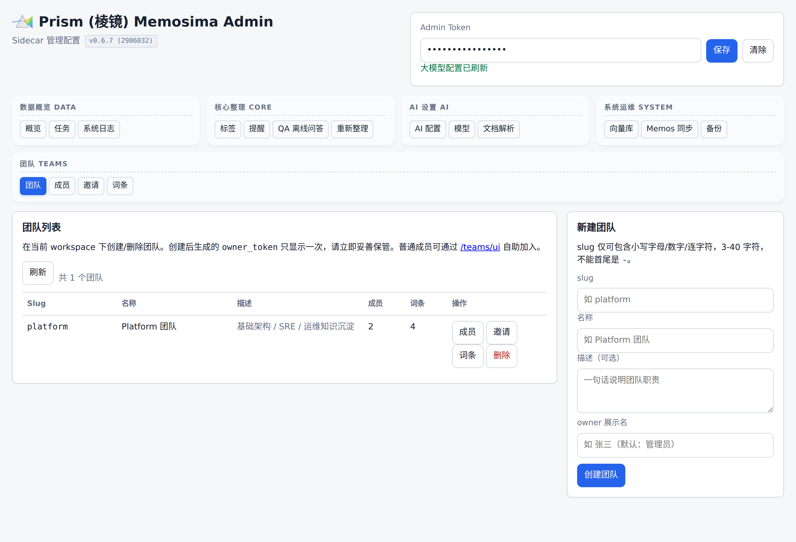
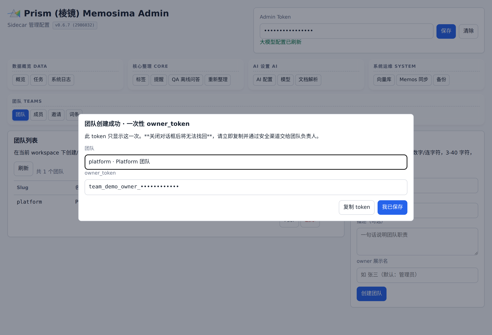
owner_token reveal 对话框——此 token 仅显示一次，必须立刻通过安全渠道交给团队负责人（截图中已用 team_demo_owner_•••••• 占位）。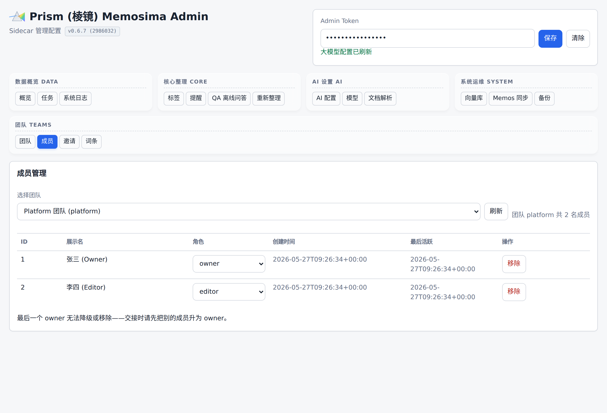
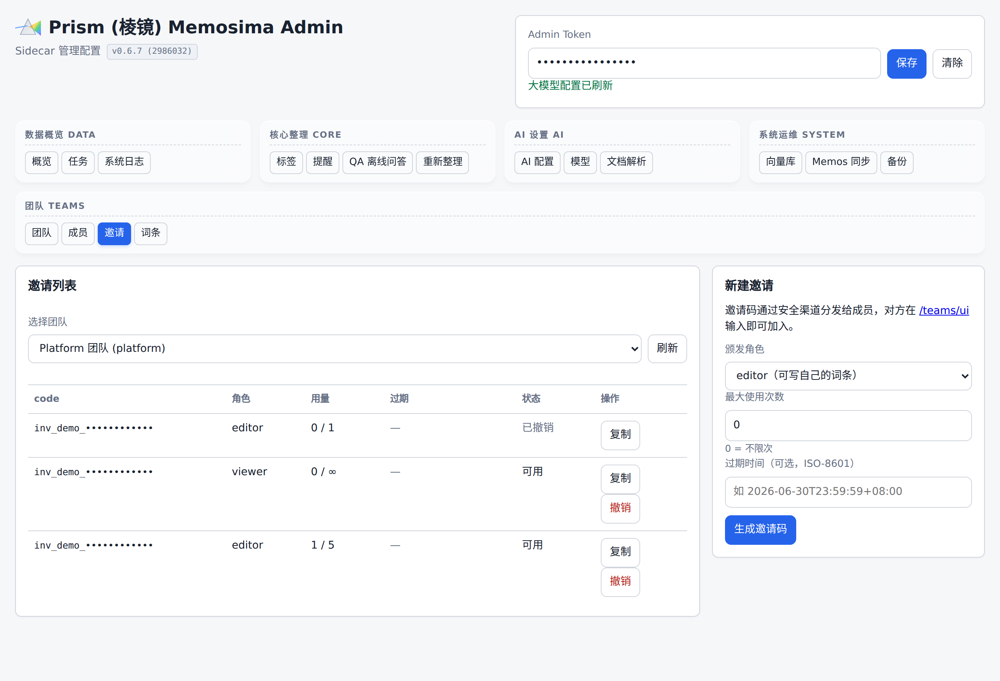
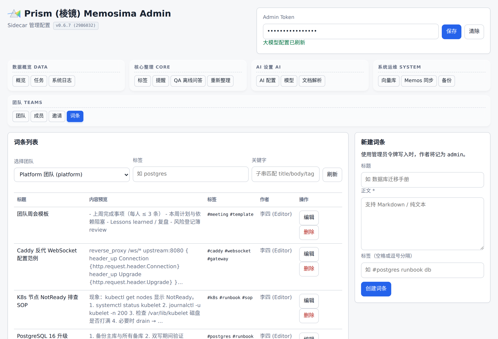
0a.2 成员入口 /teams/ui
普通成员打开 /teams/ui，无需任何 token即可使用：
- 加入：方式 A 粘贴邀请码 + 展示名（调用
POST /teams/join）； 方式 B 已经有team_xxx时填入 slug + token + 自报角色绑定。 - 多团队切换：顶栏下拉选择当前活跃团队；同一浏览器可保存任意多
个团队的 token，全部仅存在
localStorage内，从不上传服务器。 - 词条：左右两栏分别承载新建表单与列表，列表支持标签/关键字 筛选 + 分页；列内联「编辑 / 删除」（删除走 confirm 二次确认）。
- 检索 / QA：query + tag + top_k + 「启用向量语义检索」复选框；
点「检索」看 hits 列表（含 mode 徽标），点「生成超级 Prompt」一键拼装并复制；
可选折叠的「自定义系统提示」覆盖
system_prompt字段。 - 成员 / 邀请（owner 专属）：仅当用户当前活跃身份是 owner 时显示
两个 tab，能力等价于
/admin/ui内对应 panel。 - 退出：顶栏「退出」只清掉本浏览器对该团队的 token，不会 删除服务器上的成员关系；后续使用同一邀请码或新邀请码可再次加入。
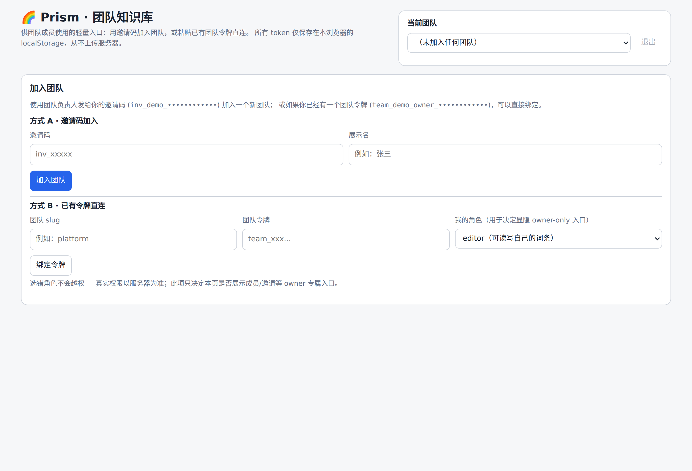
team_xxx 直接绑定（需自报角色以决定显隐 owner-only 入口）。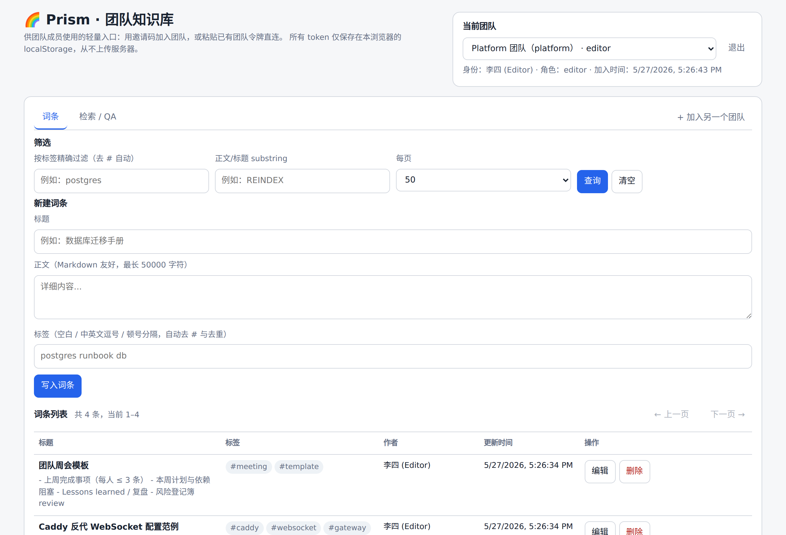
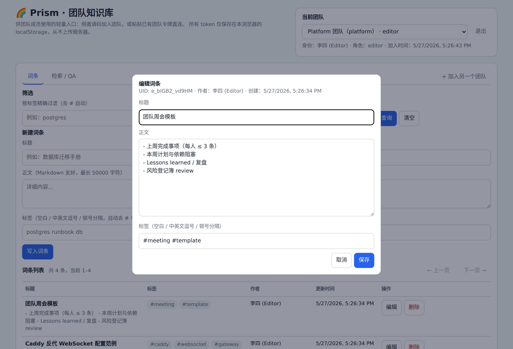
PUT /teams/{slug}/entries/{uid}，按需异步重建向量。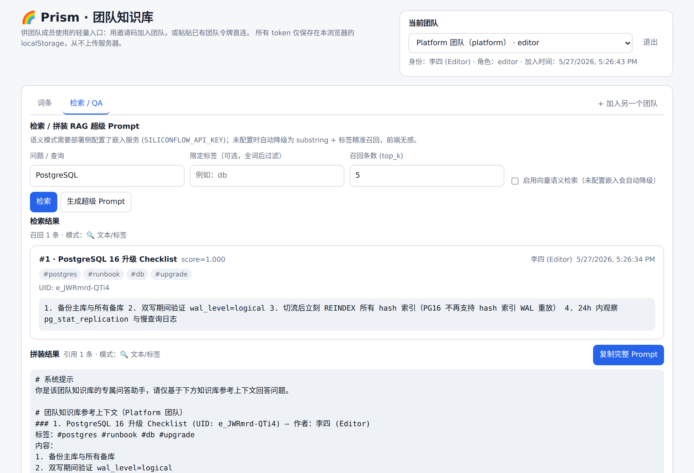
SILICONFLOW_API_KEY 的纯文本模式）。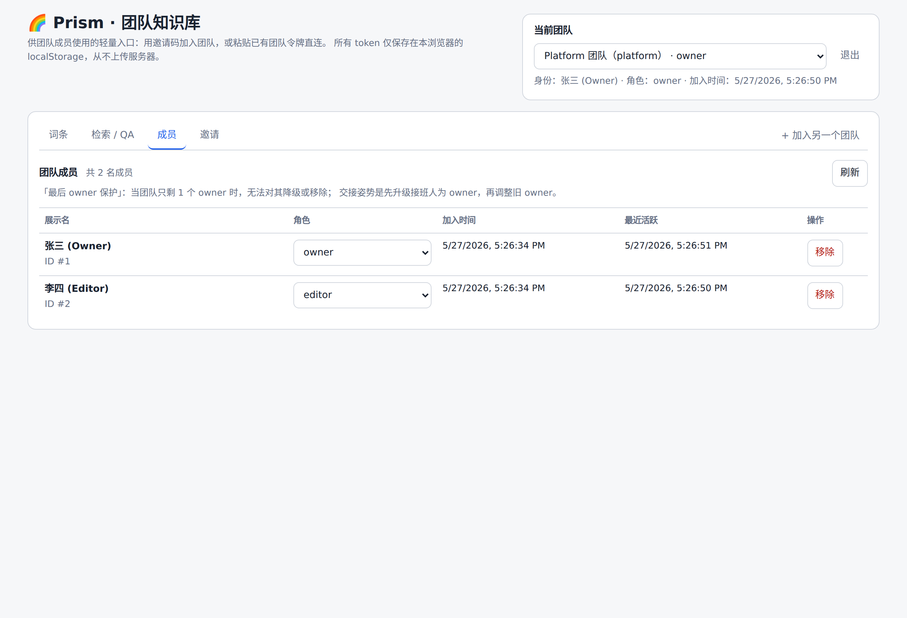
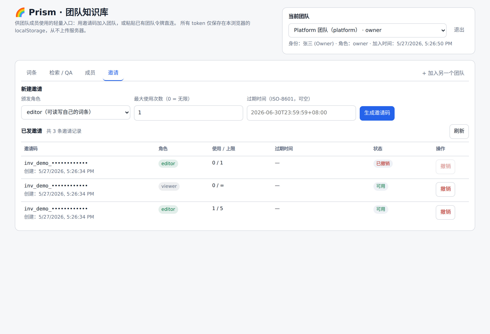
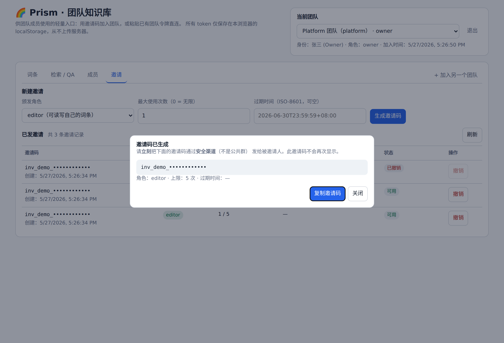
owner_token / team_xxx / 邀请码都只显示一次，
关闭对话框 / 刷新页面后即从内存消失，服务器仅保留 SHA-256 哈希。
务必当场通过安全渠道转交。
0. 准备工作
0.1 启动 Sidecar
# 最小环境
export SIDECAR_ADMIN_TOKEN=admin-token # 必填：管理员令牌
export MEMOS_BASE_URL=http://localhost:5230 # Memos 主站
export MEMOS_API_TOKEN=your-memos-pat
export DEEPSEEK_API_KEY=sk-... # 任意一个推理 provider
# 可选：开启向量检索（团队检索能从「文本」升级到「语义」）
export SILICONFLOW_API_KEY=sk-...
uv run uvicorn memosima.api.app:create_app --factory --host 0.0.0.0 --port 8080不配置
SILICONFLOW_API_KEY也能用，团队检索会自动降级为 substring + 标签精准召回，不阻断主流程。
0.2 三类令牌
| 令牌 | 来源 | 用途 | 安全级别 |
|---|---|---|---|
SIDECAR_ADMIN_TOKEN | 部署时手工配置 | 创建/删除团队、跨团队兜底运维 | 最高 |
owner_token（team_xxx） | 创建团队时返回一次 | 团队负责人日常管理 | 高 |
成员 token（team_xxx） | 兑换邀请码时返回一次 | 普通成员读写词条 | 中 |
所有 token 通过 Authorization: Bearer <token> 头传递。plaintext 在数据库里只存 sha256 哈希，丢了只能撤销重发，无法找回。
1. 全流程：从开团到问答（curl 走查）
1.1 管理员开团
curl -X POST http://localhost:8080/admin/teams \
-H "Authorization: Bearer admin-token" \
-H "Content-Type: application/json" \
-d '{
"slug": "platform",
"name": "Platform 团队",
"description": "基础架构与 SRE",
"owner_display_name": "张三"
}'返回：
{
"team": {
"id": 1,
"slug": "platform",
"name": "Platform 团队",
"description": "基础架构与 SRE",
"member_count": 1,
"entry_count": 0,
"created_at": "2026-05-27T10:00:00+08:00",
"updated_at": "2026-05-27T10:00:00+08:00"
},
"owner_member_id": 1,
"owner_token": "team_8f3a9b...c7d1"
}owner_token 只显示这一次，立即用安全渠道（不是 IM 群）交给团队负责人。slug 规则：3-40 字符，小写字母/数字/连字符，不能首尾是连字符（正则
^[a-z0-9][a-z0-9-]{1,38}[a-z0-9]$）。
1.2 负责人生成邀请码
curl -X POST http://localhost:8080/teams/platform/invites \
-H "Authorization: Bearer team_8f3a9b...c7d1" \
-H "Content-Type: application/json" \
-d '{
"role": "editor",
"max_uses": 5,
"expires_at": "2026-06-30T23:59:59+08:00"
}'返回：
{
"id": 1,
"code": "inv_4d2e7a...",
"role": "editor",
"max_uses": 5,
"uses": 0,
"expires_at": "2026-06-30T23:59:59+08:00",
"revoked_at": null,
"created_at": "2026-05-27T10:05:00+08:00"
}可选参数：
| 字段 | 默认 | 说明 |
|---|---|---|
role | editor | 颁发的角色：owner / editor / viewer |
max_uses | 0 | 0 = 无限次；>0 用完即失效（编辑器请慎用无限） |
expires_at | null | ISO-8601 字符串；过期后兑换返回 400 |
撤销邀请：DELETE /teams/platform/invites/{id}（已撤销/已耗尽的邀请会从 list_invites 中被标注，便于审计）。
1.3 成员兑换邀请码
成员不需要任何 token 就能兑换，只需要邀请码：
curl -X POST http://localhost:8080/teams/join \
-H "Content-Type: application/json" \
-d '{
"code": "inv_4d2e7a...",
"display_name": "李四"
}'返回：
{
"team": { "...": "..." },
"member": {
"id": 2,
"display_name": "李四",
"role": "editor",
"created_at": "...",
"updated_at": "...",
"last_active_at": null
},
"token": "team_a1b2c3...d4e5"
}token 同样只显示一次。display_name 之后会作为词条的 author_display_name 出现在搜索结果里。
1.4 写知识词条
curl -X POST http://localhost:8080/teams/platform/entries \
-H "Authorization: Bearer team_a1b2c3...d4e5" \
-H "Content-Type: application/json" \
-d '{
"title": "数据库迁移手册",
"body": "1. 备份 → 2. 双写 → 3. 切流 → 4. 回收旧库\n注意：PostgreSQL 16 不再支持 hash 索引 WAL 重放，需要 REINDEX。",
"tags": ["#postgres", "#runbook", "#db"]
}'注意几个关键行为：
- 标签自动 去
#前缀 + 转小写 + 去重；查询时带不带#都行。 body最长 50000 字符；超过返回 422。- 创建成功后异步重建向量：若
SILICONFLOW_API_KEY已配置，嵌入在响应返回前完成；否则跳过，不报错。
1.5 列出 / 过滤词条
# 列全部（分页）
curl -H "Authorization: Bearer team_a1b2c3...d4e5" \
"http://localhost:8080/teams/platform/entries?limit=20&offset=0"
# 按标签精确过滤（去 # 后做全词匹配）
curl -H "Authorization: Bearer team_a1b2c3...d4e5" \
"http://localhost:8080/teams/platform/entries?tag=postgres"
# 关键字 substring 过滤
curl -H "Authorization: Bearer team_a1b2c3...d4e5" \
"http://localhost:8080/teams/platform/entries?query=REINDEX"返回中 total 是不带分页的命中总数，方便前端做分页器。
1.6 改 / 删词条（编辑者隔离）
curl -X PUT http://localhost:8080/teams/platform/entries/e_2026052710... \
-H "Authorization: Bearer team_a1b2c3...d4e5" \
-H "Content-Type: application/json" \
-d '{ "title": "数据库迁移手册 v2" }'
curl -X DELETE http://localhost:8080/teams/platform/entries/e_2026052710... \
-H "Authorization: Bearer team_a1b2c3...d4e5"权限矩阵：
| 操作者 | 别人写的词条 | 自己写的词条 |
|---|---|---|
| viewer | ❌ 403 | ❌ 403（编辑/删除接口要 editor+） |
| editor | ❌ 403 | ✅ |
| owner | ✅ | ✅ |
| admin token | ✅ | ✅ |
PUT 是「部分更新」：只传想改的字段，传 null 等价于不传。传 tags: [] 会清空标签。
1.7 语义检索
curl -X POST http://localhost:8080/teams/platform/search \
-H "Authorization: Bearer team_a1b2c3...d4e5" \
-H "Content-Type: application/json" \
-d '{
"query": "Postgres 升级到 16 应该注意什么？",
"top_k": 5,
"use_vector": true,
"tag": "db"
}'行为细节：
use_vector=true+ 嵌入 Key 可用 + 命中向量 →retrieval_mode: "vector"，score 是 cosine 相似度。- 任一条件不满足 → 自动落到
text模式，score 由 title 命中(+1.0)、body 命中(+0.5)、tag 命中(+0.3) 累加。 tag是后置过滤：先按向量召回top_k*2候选，再用全词 tag 过滤截到top_k。- 文本模式是 substring 匹配，长句中文查询命中率有限；前端建议把用户原始问题拆为关键词后再调用。
1.8 一键生成超级 Prompt
curl -X POST http://localhost:8080/teams/platform/qa/generate-prompt \
-H "Authorization: Bearer team_a1b2c3...d4e5" \
-H "Content-Type: application/json" \
-d '{
"query": "Postgres 升级到 16 的注意事项",
"system_prompt": "你是 SRE 助手，回答必须引用知识库 UID。",
"top_k": 3,
"use_vector": true
}'返回的 assembled_prompt 可直接复制到任意大模型客户端使用。如果检索为空，Prompt 中会显示 （未在团队知识库内找到符合条件的条目），避免大模型「凭空编造」。
2. 团队治理（owner 的进阶操作）
2.1 列出成员
curl -H "Authorization: Bearer team_8f3a9b...c7d1" \
http://localhost:8080/teams/platform/members响应里没有 token，token 只在创建/兑换时各返回一次。
2.2 调整角色
curl -X PUT http://localhost:8080/teams/platform/members/2/role \
-H "Authorization: Bearer team_8f3a9b...c7d1" \
-H "Content-Type: application/json" \
-d '{ "role": "owner" }'最后 owner 保护：当团队只剩 1 个 owner 时：
- 把这个 owner 降级 →
409 Conflict: Cannot demote the last remaining owner - 把这个 owner 删除 →
409 Conflict: Cannot remove the last remaining owner
正确的「交接」姿势：先把接班人升为 owner（团队此时有 2 个 owner），再把旧 owner 降级或移除。
2.3 移除成员
curl -X DELETE http://localhost:8080/teams/platform/members/2 \
-H "Authorization: Bearer team_8f3a9b...c7d1"移除后该成员的 token 立即失效，但他写过的词条不会被自动删除，author_display_name 仍是当时的展示名（历史快照）。
2.4 撤销邀请
curl -H "Authorization: Bearer team_8f3a9b...c7d1" \
http://localhost:8080/teams/platform/invites
curl -X DELETE http://localhost:8080/teams/platform/invites/1 \
-H "Authorization: Bearer team_8f3a9b...c7d1"撤销立即生效，后续任何带这个 code 的 POST /teams/join 都会 400。
2.5 修改团队元信息
curl -X PUT http://localhost:8080/teams/platform \
-H "Authorization: Bearer team_8f3a9b...c7d1" \
-H "Content-Type: application/json" \
-d '{ "name": "Platform & SRE", "description": "扩编后的名字" }'slug 不可改（改 slug 等于重建团队，所有 token 都要失效）。
3. 管理员的总控操作
3.1 列出所有团队
curl -H "Authorization: Bearer admin-token" \
http://localhost:8080/admin/teams3.2 跨团队兜底操作
管理员 token 可以直接调用任意 /teams/{slug}/... 路径，效果等同于该团队的 owner：
curl -X PUT http://localhost:8080/teams/platform/entries/e_xxx \
-H "Authorization: Bearer admin-token" \
-d '{ "title": "（管理员修正）xxx" }'适用场景：成员把 owner token 弄丢了 / 团队跑路了 / 需要平台运营介入。
3.3 删除团队（不可逆）
curl -X DELETE http://localhost:8080/admin/teams/platform \
-H "Authorization: Bearer admin-token"级联删除：所有成员、邀请、词条、向量索引一并清空。已发出的成员 token 同步失效。删除前请先 GET /admin/teams 或导出词条。
4. Python 客户端最小示例
import httpx
BASE = "http://localhost:8080"
ADMIN = "admin-token"
# 1) 开团
r = httpx.post(
f"{BASE}/admin/teams",
headers={"Authorization": f"Bearer {ADMIN}"},
json={"slug": "growth", "name": "增长团队"},
).json()
owner_token = r["owner_token"]
# 2) 发邀请
invite = httpx.post(
f"{BASE}/teams/growth/invites",
headers={"Authorization": f"Bearer {owner_token}"},
json={"role": "editor", "max_uses": 3},
).json()
# 3) 成员加入
joined = httpx.post(
f"{BASE}/teams/join",
json={"code": invite["code"], "display_name": "Alice"},
).json()
member_token = joined["token"]
# 4) 写词条
entry = httpx.post(
f"{BASE}/teams/growth/entries",
headers={"Authorization": f"Bearer {member_token}"},
json={
"title": "AARRR 漏斗速查",
"body": "Acquisition / Activation / Retention / Revenue / Referral",
"tags": ["growth", "framework"],
},
).json()
# 5) 检索
hits = httpx.post(
f"{BASE}/teams/growth/search",
headers={"Authorization": f"Bearer {member_token}"},
json={"query": "AARRR", "use_vector": False},
).json()
print(hits["retrieval_mode"], hits["hits"][0]["entry"]["title"])
# 6) 拼 Prompt 给大模型
prompt = httpx.post(
f"{BASE}/teams/growth/qa/generate-prompt",
headers={"Authorization": f"Bearer {member_token}"},
json={"query": "Retention 怎么提升？", "use_vector": False},
).json()
print(prompt["assembled_prompt"])5. 错误码 & 排查表
| 状态 | 含义 | 典型原因 / 处理 |
|---|---|---|
400 Team slug must be 3-40 chars... | slug 不合规 | 改成 [a-z0-9-]，首尾不能是 - |
400 Invite ... not valid | 邀请失效 | 已撤销 / 已耗尽 / 已过期；重新生成 |
401 Missing Authorization bearer token | 没带 token | 加上 Authorization: Bearer ... 头 |
401 Invalid team token | token 不存在 | 可能已被撤销 / 团队已删除；找 owner 重新发邀请 |
403 Token does not belong to this team | 跨团队调用 | 检查路径 slug 与 token 所属是否一致 |
403 This action requires at least the 'owner' role | 角色不够 | 找 owner 升级，或换管理员 token 兜底 |
403 Editors can only modify entries they authored | 编辑者越权 | 让作者本人改，或请 owner 改 |
404 Team not found | slug 拼错 / 团队已删 | GET /admin/teams 核对 |
409 Team slug already exists | slug 重复 | 同 workspace 内 slug 全局唯一 |
409 Cannot demote the last remaining owner | 触发最后 owner 保护 | 先把别人升为 owner，再降级旧 owner |
6. 安全 & 运维提示
- token 是 bearer：任何人拿到都能调用，禁止把 token 提交到 Git、写到日志、发到 IM 公共群。
- 定期轮换 owner token：建议每季度撤销旧 owner 邀请的成员、给 owner 重新发一个
role=owner, max_uses=1的邀请，由 owner 本人兑换换一个新 token。 - 数据备份：团队数据存在
data/sidecar/sidecar.db，已被原生的bash backup.sh一并打包，无需额外操作。 - 向量索引一致性：如果你切换了嵌入模型（如从
bge-m3换到别的），旧的向量会失效。临时方案：对每条词条PUT一次（哪怕 body 不变），会自动重算向量。 - 多租户：团队功能本质还是
workspace_id内的子模块。如果你需要真正的多公司隔离，仍然推荐 README 中描述的「物理隔离方案」——每家公司一个 sidecar 容器，再在内部用 teams 区分小组。
7. 参考
- 实现源码：
src/memosima/api/teams.py、src/memosima/api/team_security.py、src/memosima/db/store.py - 端到端示例：
tests/test_teams.py（13 个 case，可直接uv run pytest tests/test_teams.py运行验证） - README 简版索引：
README.md第 150 行起「👥 团队知识库（Team Knowledge Base）」章节